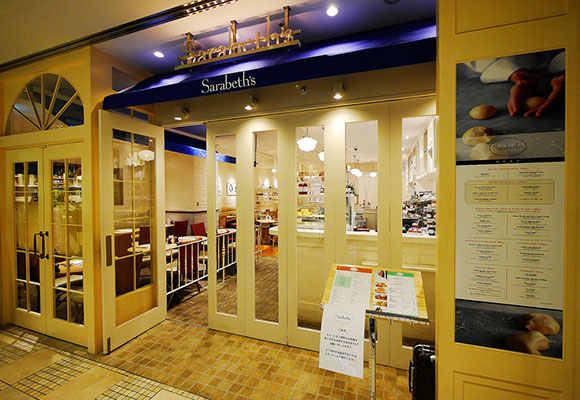
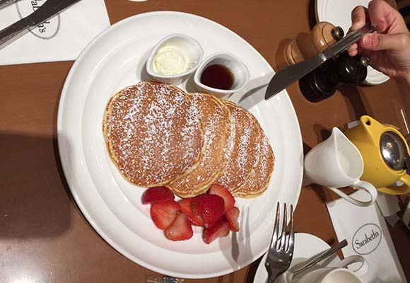

Shinjukupasutakan
Sarabeth’s
東京大人味發見
Day1-2015.07.23
< 新 宿 區>
朋友說這裡有新一間每次經過都在排隊的店，在這我們一起與另一個在這打工朋友見面，鬆餅好吃。
店名：Sarabeth’s(紐約早餐女王)
營業時間：9:00-22:00
住址：東京都新宿區新宿 3-38-2(新宿LUMINE2 2樓)(新宿車站南口)
網址：
http://sarabethsrestaurants.jp/
 
back